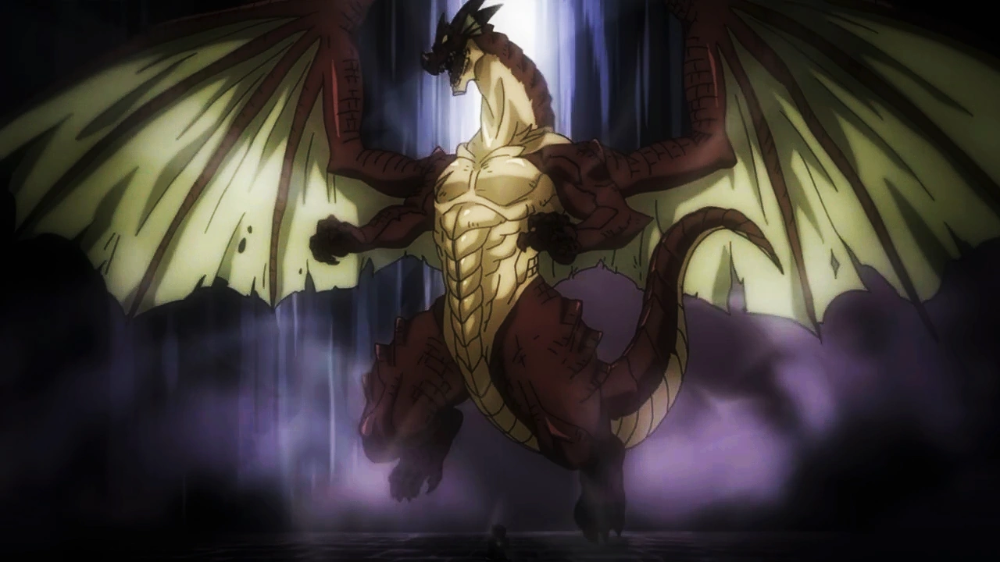

Post #1
Natsu Dragneel é um Mago da Guilda Fairy Tail, em que ele é um membro do Time Natsu. Ele é o irmão mais novo de Zeref, tendo originalmente morrido há 400 anos, e, posteriormente, foi revivido pelo seu irmão como o mais poderoso Etherious: E.N.D.. Natsu também está entre os cinco Dragon Slayers enviados para o futuro há 400 anos atrás, tendo um propósito adicional na missão de derrotar Acnologia. Na dublagem brasileira é dublado por William Viana. Contato.